When working on graphs don’t think “what chart should I use?”, but “what am I trying to show?” In this section we will look at different types of chart, what they show and when to use them. We will not cover all the graphs, but you will definitely expand your kit!
16.1 Category Comparison
Graphs for category comparison are a type of data visualization that are used to compare and contrast different categories or groups. The most common of them is bar chart! The one below shows the top 5 countries by GDP per Capita in 1997. You can easily see that Norway is first and Switzerland is 5th!
Show the code
gapminder %>%filter(year ==1997) %>%slice_max(gdpPercap, n =5) %>%ggplot(aes(x =fct_reorder(country,gdpPercap,.desc = T), y = gdpPercap)) +geom_col(fill ="steelblue") +theme_minimal(base_size =18) +labs(x =NULL, y =NULL, title ="Top 5 countries by GDP per Capita in 1997") +geom_text(aes(label =round(gdpPercap,0)), vjust =10, color ="white", size =5) +theme(panel.grid =element_blank(), axis.text.y =element_blank())
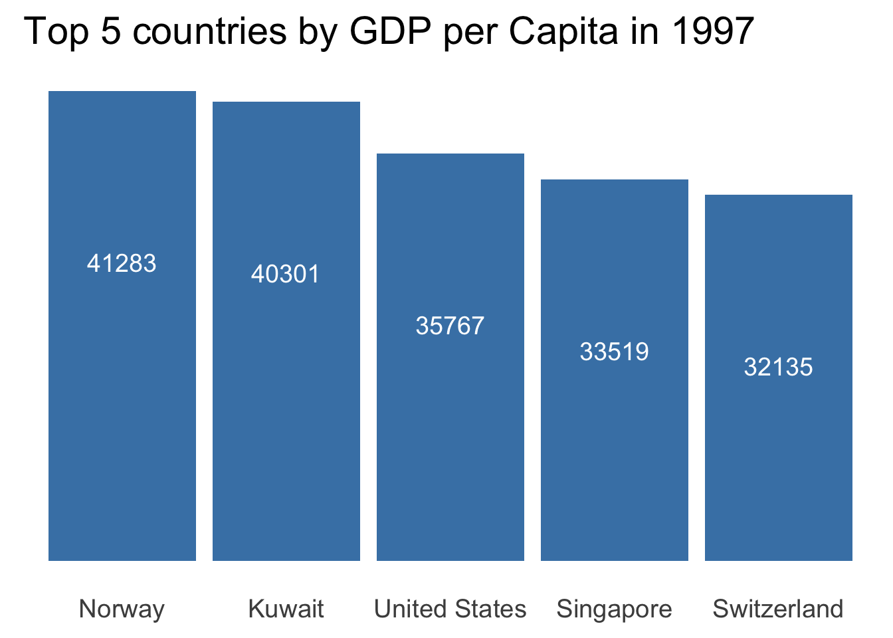
Vertical bar charts are great to provide a quick comparison for a small number of categories (less than 7). But if need to show ranking of more things, flip the axis of the bar chart! Additional bonus, horizontal bar charts are great if you have long names to display. Below are the results of the 2021 London election. British YouTuber Niko Omilana finished 5th for the memes! Max Fosh, another YouTuber, also passed the cut off!
barh_data %>%ggplot(aes(x =fct_reorder(Candidate, Percentage), y = Percentage, fill =as.factor(is.youtuber))) +geom_col() +theme_minimal(base_size =16) +coord_flip() +labs(x =NULL, y =NULL, title ="London Mayor Elections (2021) by % of Votes") +theme(panel.grid =element_blank(), legend.position ="none", plot.caption.position ="plot") +scale_y_discrete(expand =c(0,0,0,3)) +geom_text(aes(label = Percentage), nudge_y =0.3, hjust ="left") +scale_fill_manual(values =c("#c0bfff","#f3e408","#D96161"))
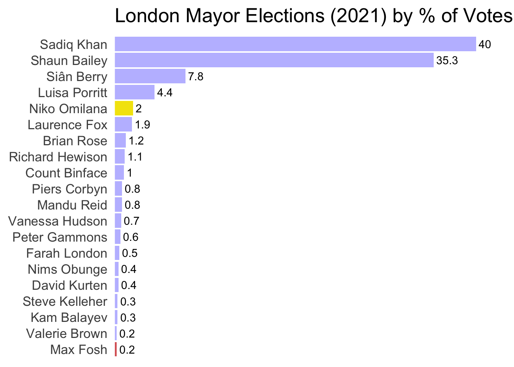
16.2 Distribution
16.2.1 Histogram
What if you want to show the distribution of the data? We can use a variation of a bar chart – histogram! Histograms show the distribution of continuous data by grouping it into bins and displaying the frequency or proportion of observations that fall into each bin. They are great if you want to show the shape of the distribution, but they are very sensitive to the bins you choose. Notice how the shape of the distribution changes for each number of bins. It is important to strike a balance between too few and too many. 6 bins makes our distribution look pretty normal while 30 bins make it all over the place. 15 bins seems about right it preserves the bimodal feature of the distribution, while keeping the picture legible.
Show the code
base <- iris %>%ggplot(aes(x = Sepal.Length)) +theme_minimal() +theme(panel.grid =element_blank(), axis.text.y =element_blank()) +coord_cartesian(expand =FALSE, clip ="off") +labs(y =NULL, x =NULL)hist_1 <- base +geom_histogram(fill ="steelblue", color ="white", bins =6) +labs(subtitle ="6 bins")hist_2 <- base +geom_histogram(fill ="steelblue", color ="white", bins =15) +labs(subtitle ="15 bins")hist_3 <- base +geom_histogram(fill ="steelblue", color ="white", bins =30) +labs(subtitle ="30 bins")(hist_1 + hist_2 + hist_3) +plot_annotation(title ="iris Sepal Length Distribution Histograms with Varying Bins")
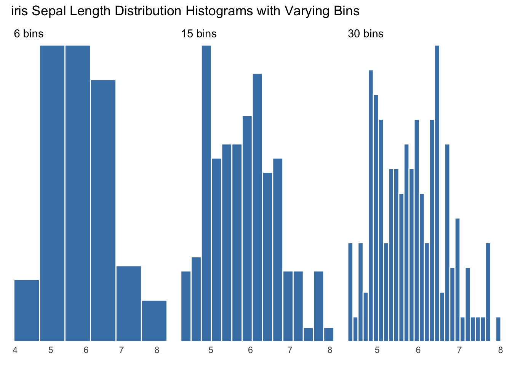
16.2.2 Density Plot
Unlike histograms, density plots use a continuous line to represent the data instead of bars. This smooth curve provides a more detailed and nuanced representation of the distribution of the data, allowing for easier detection of patterns and trends. The density plot constructs this line by placing many small normal distributions at each point in the data, which are then used to weigh all points within their respective range and draw a curve connecting them. The width of these curves is controlled by the bandwidth of the density plot, which determines how wide the curves span. A larger bandwidth will consider more points, resulting in a smoother curve, while a smaller bandwidth will lead to a jagged line.
Show the code
base <- iris %>%ggplot(aes(x = Sepal.Length)) +theme_minimal() +theme(panel.grid =element_blank(), axis.text.y =element_blank()) +coord_cartesian(expand =FALSE, clip ="off") +labs(y =NULL, x =NULL)dens_1 <- base +geom_density(color ="steelblue", linewidth =2, bw =0.3) +labs(subtitle ="Band Width 0.3")dens_2 <- base +geom_density(color ="steelblue", linewidth =2, bw =0.1) +labs(subtitle ="Band Width 0.1")dens_3 <- base +geom_density(color ="steelblue", linewidth =1, bw =0.03) +labs(subtitle ="Band Width 0.03")(dens_1 + dens_2 + dens_3) +plot_annotation(title ="iris Sepal Length Distribution Density Plots with Varying Band Widths")
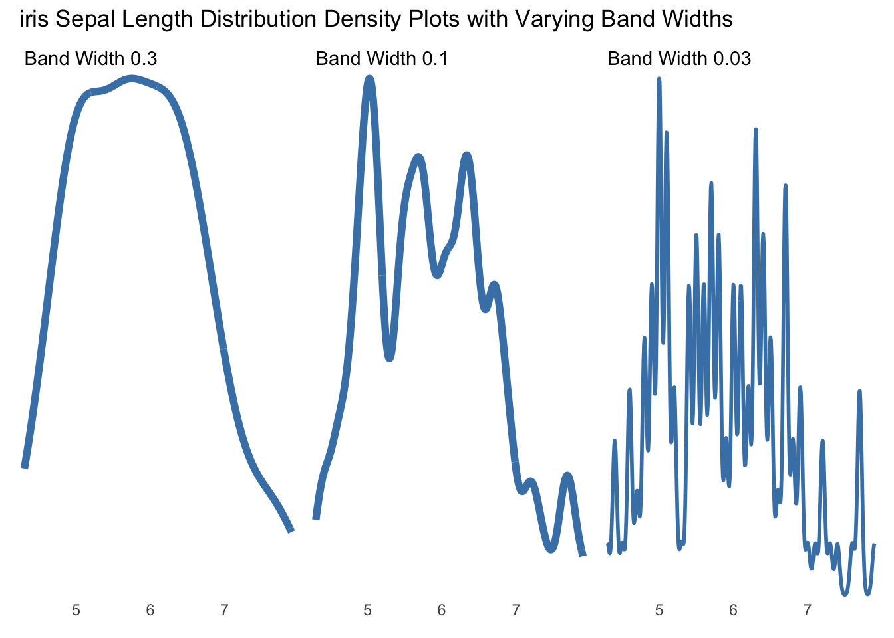
16.2.3 Frequency Polygon
It is similar to a histogram, but instead of bars, it uses a continuous line to connect the points representing the frequencies. Frequency polygons are particularly useful when comparing two or more data sets on the same plot. Just like histogram it relies on the selection of bins.
This section was inspired by https://www.cedricscherer.com/2021/06/06/visualizing-distributions-with-raincloud-plots-and-how-to-create-them-with-ggplot2/
Boxplots provide a summary of the distribution of a dataset, show the median, the lower and upper quartiles, and the minimum and maximum values of a dataset. The box in the middle represents the interquartile range (IQR), which is the range of the middle 50% of the data. The line in the box represents the median, which is the midpoint of the data. The whiskers on the top and bottom extend to the minimum and maximum values, excluding outliers. It is incredible how much information boxplots contain! With just one plot, you can quickly identify outliers and gain a visual understanding of the distribution of the data.
In the context of the iris dataset, the boxplot of Sepal Length across different species provides a clear picture of the distribution of this variable. However, like real boxes, boxplots can also hide important information. To illustrate this point, we can use a dataset with the same summary statistics but different distributions. In the second graph, three identical boxplots are displayed. However, once we add data points to the plot, it becomes evident that the distributions are quite different.
One solution is to use violin plots. In its essence it is a vertical density plot. Look how much more we know about out data distribution of iris species! We can see the density distribution, points and quantiles!
Going back to our new data set, notice how different the datasets look, clearly there are some patterns. Group 1, which has four times more observations, appears to be nearly identical to Group 3. This is because the default setting “scale =”area”” is a little misleading. We can fix that by changing it to “scale =”count””
Do you remember how band width is extremely important when making density plots? Setting an apprpriate band width reveals the true distribution!
Show the code
base_dist +geom_violin(scale ="count", bw = .3, color =NA, fill ="steelblue")
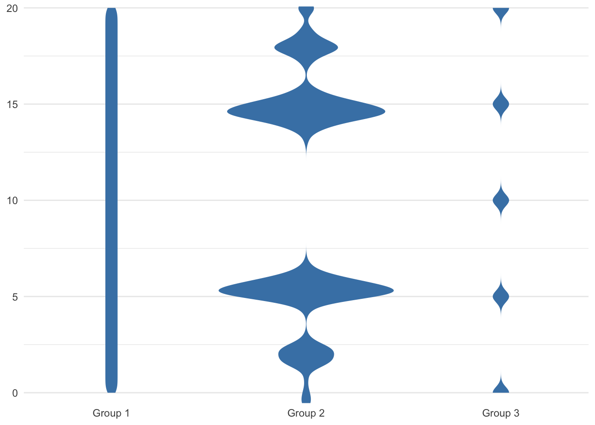
16.2.6 Bee Hive Plot
The bee hive plot is a scatter plot that arranges data points as dots to minimize overlap. It’s ideal for visualizing small datasets because it creates patterns like a density plot without hiding individual data points.
All of the plots we have covered so far have their advantages: 1. Box plot shows important statistics 2. Density plot provides high-level view of data shape 3. Bee hive plot “shows” the actual datapoints While combining these plots might make for a crowded visual, with some modifications, it’s possible to create a hybrid plot that captures the strengths of each.
Rain Cloud Plot combines elements of box plots, violin plots, and density plots. It uses a density plot to show the distribution of the data, a box plot to display the statistics, and individual data points are represented as rain drops. The result is a visually appealing and informative way to visualize a large number of distributions side-by-side, allowing for easy comparisons and identification of patterns.
Isn’t this beautiful? We have a box plot, density plot, and jittered points all in the same graph without looking cluttered.
Show the code
base_dist + ggdist::stat_halfeye(adjust = .3, #bwwidth = .6, .width =0, justification =-.2, point_colour =NA ) +geom_boxplot(width = .15, outlier.shape =NA ) +## add justified jitter from the {gghalves} package gghalves::geom_half_point(## draw jitter on the leftside ="l", ## control range of jitterrange_scale = .4, ## add some transparencyalpha = .3 ) +coord_cartesian(xlim =c(1.2, NA), clip ="off")
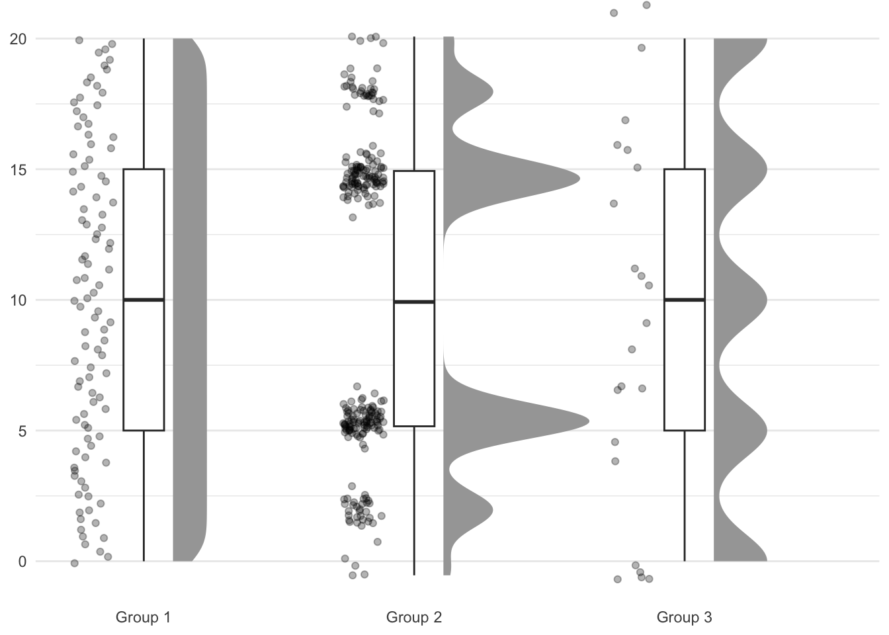
One alternative option to the boxplot is to stack the data points and use a minimal boxplot representation. While this alternative can be visually appealing, it is important to ensure that your audience understands the visualization and the meaning behind the stacked data points. It may be necessary to provide additional context or include a note explaining the meaning of the stacked slabs to avoid confusion.
Show the code
base_dist + ggdist::stat_halfeye(adjust = .3,width = .6, ## set slab interval to show IQR and 95% data range.width =c(.5, .95) ) + ggdist::stat_dots(side ="left", dotsize = .8, justification =1.05, binwidth = .3 ) +coord_cartesian(xlim =c(1.2, NA))
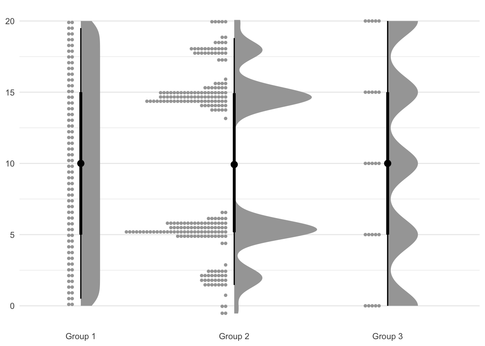
My personal favorite is the rain cloud plot, which combines vertical lines and a bar plot that is rotated horizontally to resemble actual rain clouds.
Another big collection of graphs is concerned with communicating proportions and composition.
16.3.1 Stacked Bar Charts
Show the code
us_spending <-read_csv("data/USFR_StmtNetCost_2017_2022.csv") %>% janitor::clean_names() %>%filter((restatement_flag =="N") & (agency_name !="Total")) %>%select(year = statement_fiscal_year, agency_name, net_cost_in_billions) %>%mutate(net_cost_in_billions =as.numeric(net_cost_in_billions)) %>%group_by(year) %>%mutate(proportion =round(net_cost_in_billions/sum(net_cost_in_billions),2)) %>%ungroup()spending_plot_data <- us_spending %>%group_by(year) %>%mutate(rank =rank(-1*net_cost_in_billions), agency =ifelse(rank>=5, "Other", agency_name)) %>%count(year,agency,wt = net_cost_in_billions) %>%mutate(other = agency =="Other") %>%group_by(other) %>%arrange(desc(n),.by_group = T) %>%ungroup() %>%mutate(order =-1*row_number()) %>%mutate(agency =recode( agency,"Department of Veterans Affairs"="Veterans Affairs","Department of Health and Human Services"="HHS","Department of Defense"="Defense","Social Security Administration"="SSA","Department of the Treasury"="Treasury","Interest on Treasury Securities Held by the Public"="i on Treasuries")) %>%mutate(agency =factor(agency,c("Other", "i on Treasuries", "Veterans Affairs", "Defense", "Treasury", "SSA", "HHS")))
A stacked bar chart is a type of graph used to visualize the distribution of a categorical variable. It is similar to a regular bar chart, but in a stacked bar chart, each bar is divided into sections, with each section representing a different category within the variable. The height of each section corresponds to the proportion or frequency of the category within that bar. Stacked bar charts are particularly useful when comparing the distribution of a variable across different subgroups or time periods, as they allow for easy visualization of both the overall distribution as well as the relative proportions of each subgroup or category within the variable.
As an example we will use US Expernditures across departments. Only top four departments are shown, the rest are collected into “other”. The graph below shows absolute values and its components across years.
Show the code
spending_plot_data %>%ggplot(aes(x = year, y = n, fill = agency, label = agency)) +geom_col(position="stack", show.legend = F) +scale_fill_manual(values =c("#5E5E5E", "#EF3B2C", "#2CA25F", "#006837", "#F7DC6F", "#00FFFF", "#FFC0CB")) +theme_minimal() +theme(legend.position ="right") +labs(y ="Millions Spent") +geom_label(size =3, aes(group = agency), position =position_stack(vjust =0.5), fill ="white", alpha =0.5)
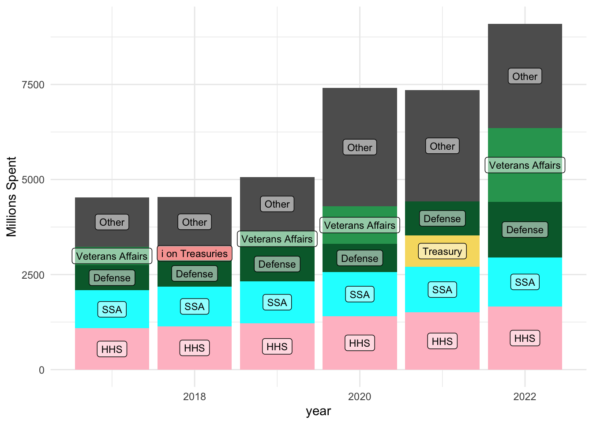
What if we are not concerned with absolute values, but relative proportions? We can use percentage stacked chart.
Show the code
spending_plot_data %>%ggplot(aes(x = year, y = n, fill = agency)) +geom_col(position="fill", show.legend = T) +scale_fill_manual( values =c("#5E5E5E", "#EF3B2C", "#2CA25F", "#006837", "#F7DC6F", "#00FFFF", "#FFC0CB")) +theme_minimal() +theme(legend.position ="none") +labs(y ="Millions Spent", fill ="Department") +geom_label(aes(x = year, y = n, label = agency, group = agency), size =3, position =position_fill(vjust =0.5), fill ="white", alpha =0.5)
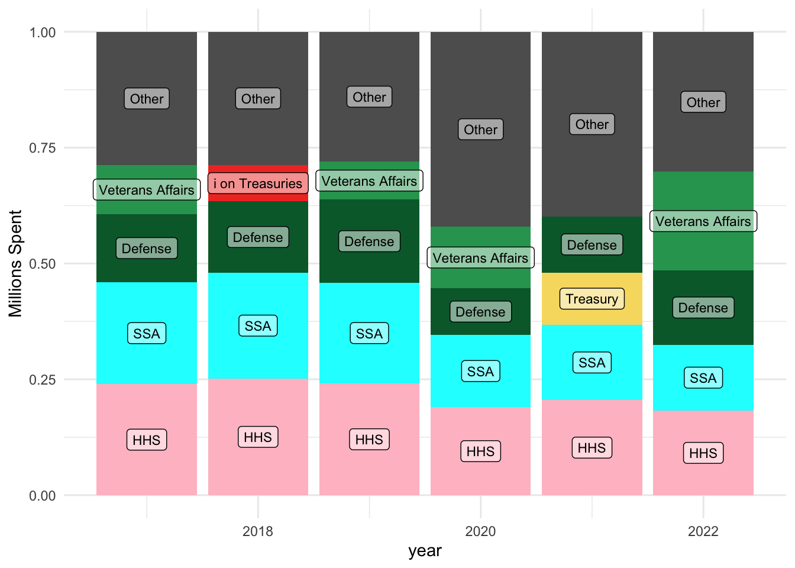
Stacked charts are useful for visualizing the distribution of categorical variables, but they can be challenging to compare categories in the middle. Typically, the easiest categories to compare are the ones at the top and bottom of the stack. For example, suppose we want to compare the trend of the Department of Defense and the Social Security Administration (SSA) over time. In this case, we can move these categories to the top and bottom positions of the stacked chart to make it easier to compare their relative sizes and trends.
Show the code
spending_plot_data %>%mutate(agency =factor(agency,c("Defense", "Other", "i on Treasuries", "Veterans Affairs", "Treasury", "HHS", "SSA"))) %>%ggplot(aes(x = year, y = n, fill = agency)) +geom_col(position="fill", show.legend = T) +scale_fill_manual( values =c("#006837", "#5E5E5E", "#EF3B2C", "#2CA25F", "#F7DC6F", "#FFC0CB", "#00FFFF")) +theme_minimal() +theme(legend.position ="none") +labs(y ="Millions Spent", fill ="Department") +geom_label(aes(x = year, y = n, label = agency, group = agency), size =3, position =position_fill(vjust =0.5), fill ="white", alpha =0.5)
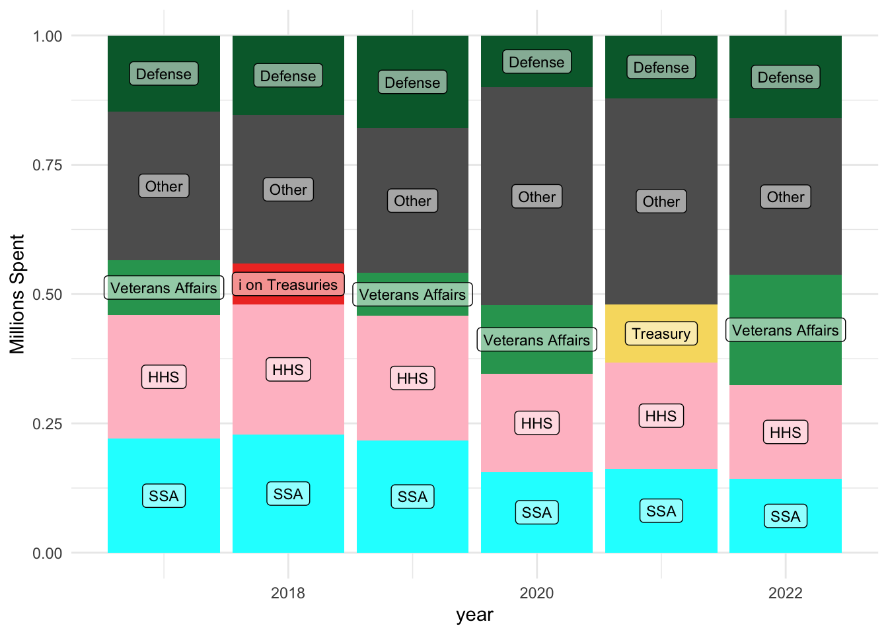
16.3.2 Pie Chart
data used from: The Growth Lab at Harvard University. The Atlas of Economic Complexity. http://www.atlas.cid.harvard.edu.
As an example dataset we will be used Japan’s export basket from 2020.
Pie charts are a variation of bar charts where each category is represented as a slice of a circle. While pie charts can effectively communicate when one category is significantly larger or smaller than the others, they become difficult to read and compare accurately when there are many categories or the differences between them are small. Comparing angles and areas of the slices can be confusing, leading to misinterpretation of the data.
But if absolutely must use a pie chart here are some rules to keep in mind: 1. Limit the number of categories to 5-7 at most. 2. Consider grouping small categories into an “Other” category to avoid clutter. 3. Arrange the slices in decreasing order of size, starting at 12 o’clock to aid in comparing them. 4. Include the category labels directly on the chart instead of relying solely on a legend. 5. Add separators between slices to help with distinguishing between them. However, keep in mind that this can also add visual clutter, so use with discretion.
One alternative to a pie chart could be a waffle chart (these food names make me hungry). It is a grid-like visualization that resembles a waffle or a checkerboard. Each square in the grid represents a proportion of the total data, making it a useful way to visualize proportions or percentages in a visually appealing way. However, they are also vulnerable to large numbers of categories. But what they are truly great at is giving the sense of proportions and sizes. Waffle chart will significantly benefit from interactivity.
What if we have a lot of data hierarchical data? Treemaps!
Treemaps are a type of visualization that allows you to display hierarchical data in a way that is easy to understand. Each node in the hierarchy is represented by a rectangle, and the size of the rectangle corresponds to the proportion of the total data. The nodes are organized in a way that preserves the hierarchy, with parent nodes containing smaller child nodes. This allows you to quickly identify which nodes are the largest and which are the smallest, as well as the relationships between them. Tree maps are especially useful for displaying large amounts of data in a compact and intuitive way. Tree maps can become very cluttered and interactivity is almost always necessary for such detailed plots. Check out the same plot from the source website.
In addition to understanding the distribution of individual variables, it is important to examine the relationship between pairs of variables. Correlation plots are a useful tool for visualizing many aspects of data: relationships between variables (or lack there of), clustering, outliers, etc.
16.4.1 Scatter Plot
The most common visualization is scatter plot! It is not a secret for anyone that scatter plots are amazing and perhaps the most persuasive types of plot. We can add a fitted lines to the plot to better show the relationships between the variables.
We have already seen plots that incorporate time change. Time series plots typically have time on the x-axis and the variable being measured on the y-axis. They can show trends, patterns, and seasonal fluctuations in the data.
16.5.1 Line Chart
Most common
S&P 500 stock market index since 1927. Historical data is inflation-adjusted using the headline CPI and each data point represents the month-end closing value.
sp500_scatter <- sp500 %>%select(-c(Average_Closing_Price,Year_Open,Annual_Percent_Change)) %>%pivot_longer(-Year) %>%mutate(year_close = name !="Year_Close") %>%ggplot(aes(x = Year, y = value, color = name)) +geom_point(size =2) +geom_dl(aes(label = name), method ="smart.grid") +theme_minimal() +theme(legend.position ="none") +labs(x =element_blank(), y ="S&P 500")sp500_line <- sp500 %>%select(-c(Average_Closing_Price,Year_Open,Annual_Percent_Change)) %>%pivot_longer(-Year) %>%mutate(year_close = name !="Year_Close") %>%ggplot(aes(x = Year, y = value, color = name)) +geom_line(aes(linetype = year_close),linewidth =1.5) +scale_color_manual(values =c("steelblue", "grey", "grey")) +geom_dl(aes(label = name), method ="smart.grid") +theme_minimal() +theme(legend.position ="none") +labs(x =element_blank(), y ="S&P 500")sp500_scatter + sp500_line
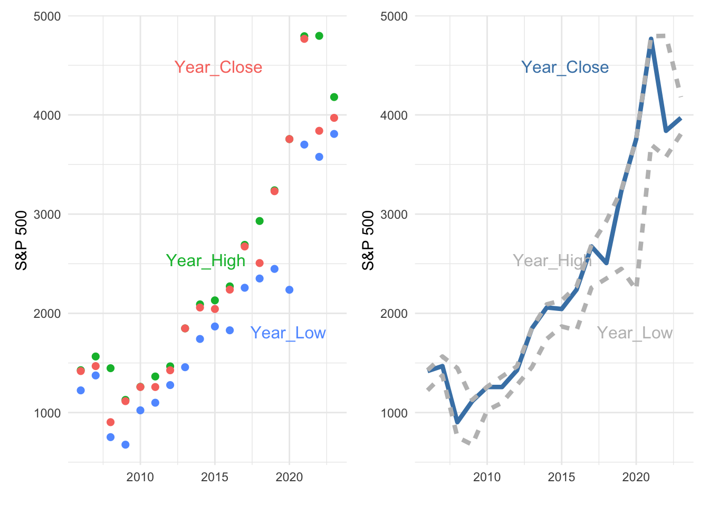
16.6 Waterfall Graph
Waterfall charts, also known as bridge charts, are a type of bar chart used to visualize the cumulative effect of sequentially introduced positive or negative values. The graph is named “waterfall” because it resembles a series of falling water droplets. Each bar in the chart represents a value and is color-coded to indicate whether it contributes to an increase or decrease in the cumulative total. They are useful for visualizing the relative contributions of positive and negative factors that affect the net change in the value being analyzed.